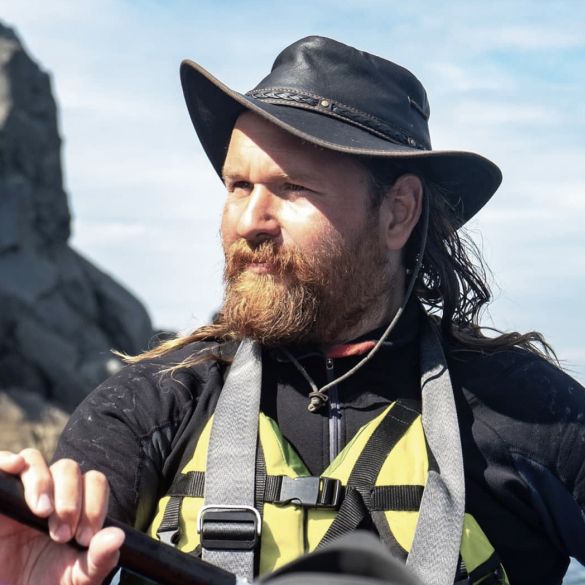

Обо мне
На этом сайте я выкладываю свои фотографии из путешествий и походов. Занимаюсь я этим давно, как фотографией так и туризмом. Тут выжимка, мои следы в этом мире.Я старался показать красоту этого мира, вернуть её всем тем, от кого она ускользает...
Я с 2014 года не обновляю этот сайт! Заходите в соцсети ;) На этом сайте я выкладываю свои фотографии из путешествий и походов. Занимаюсь я этим давно, как фотографией так и туризмом. Тут выжимка, мои следы в этом мире.Я старался показать красоту этого мира, вернуть её всем тем, от кого она ускользает...
50+
Стран
56к
Фотографий
671к
Просмотров

Блог
На этом сайте я выкладываю свои фотографии из путешествий и походов.
Путешествия
На этом сайте я выкладываю свои фотографии из путешествий и походов.
Школа инструкторов